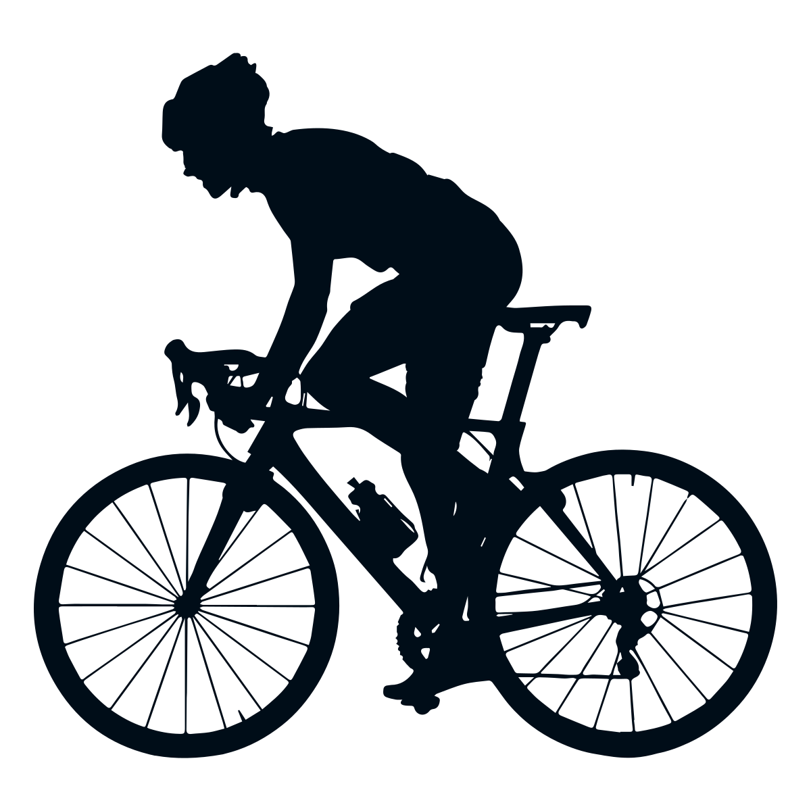
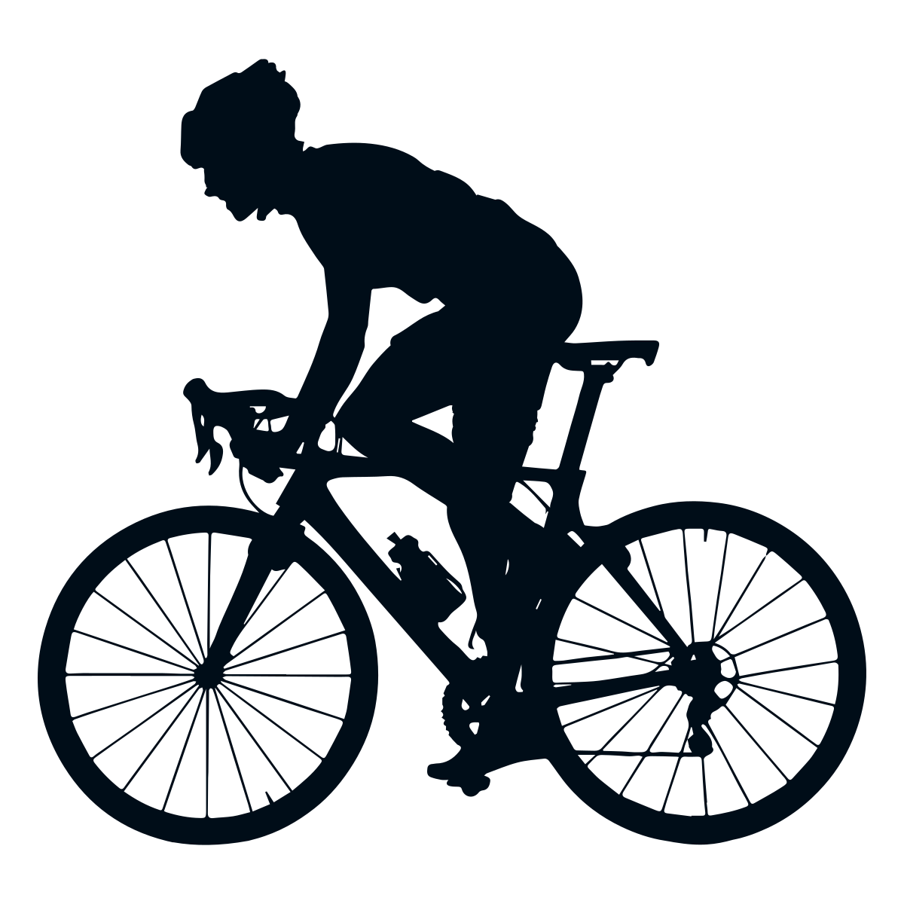
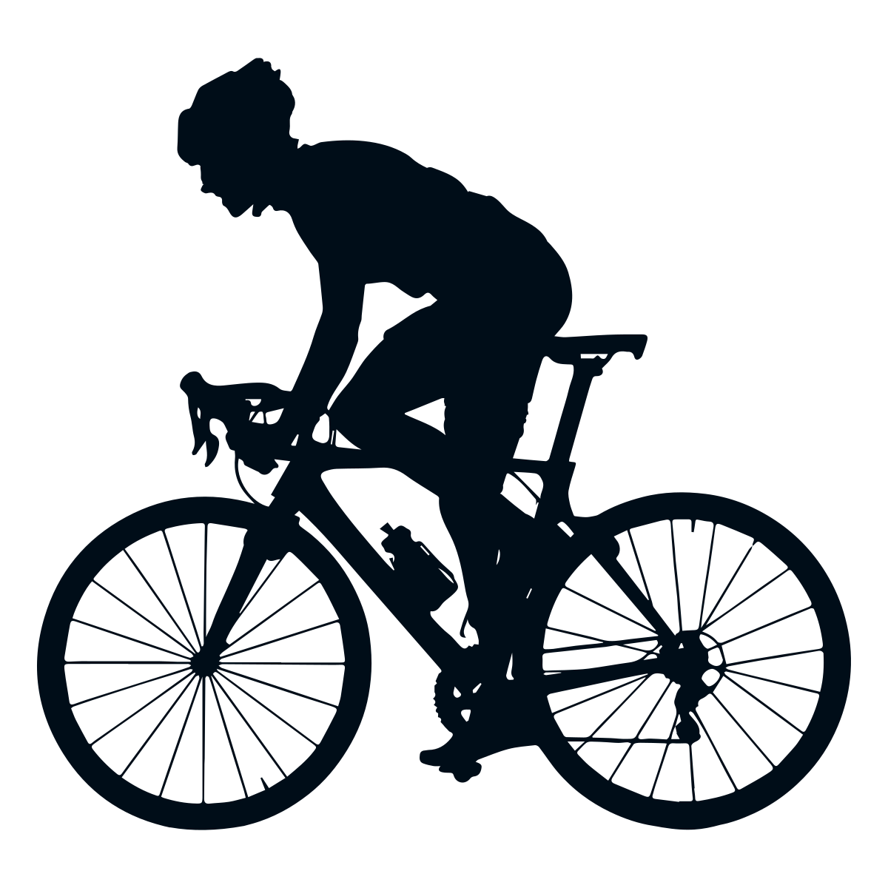
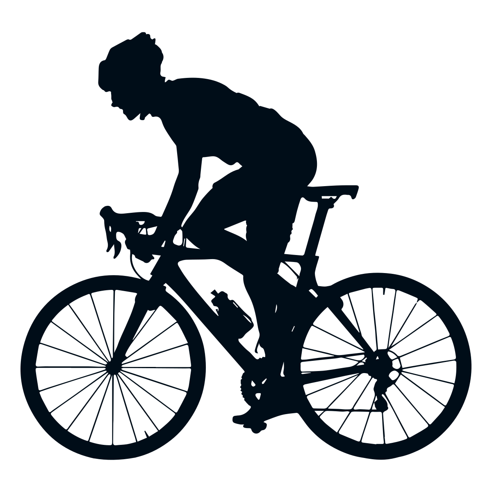

 

Os Guerreiros Abilat são um grupo de entusiastas dedicados a diversas atividades esportivas e de aventura. Nosso objetivo é promover a camaradagem, o aprendizado e a prática de esportes radicais, além de compartilhar experiências e conhecimentos entre os membros.
Se você é apaixonado por esportes como rapel, mergulho autônomo, tiro esportivo, capoeira, paraquedismo, spearfish, ciclismo e jiu-jitsu, este é o lugar certo para você! Junte-se a nós e faça parte de uma comunidade vibrante e ativa.
Nossos membros são pessoas de todas as idades e níveis de habilidade, desde iniciantes até experientes. Oferecemos treinamentos, eventos e competições regulares para que todos possam aprimorar suas habilidades e se divertir.
Se você está interessado em se juntar aos Guerreiros Abilat, confira nossa seção de alistamento para obter mais informações sobre como se tornar um membro. Estamos sempre abertos a novos guerreiros que compartilham nossa paixão por esportes e aventura!